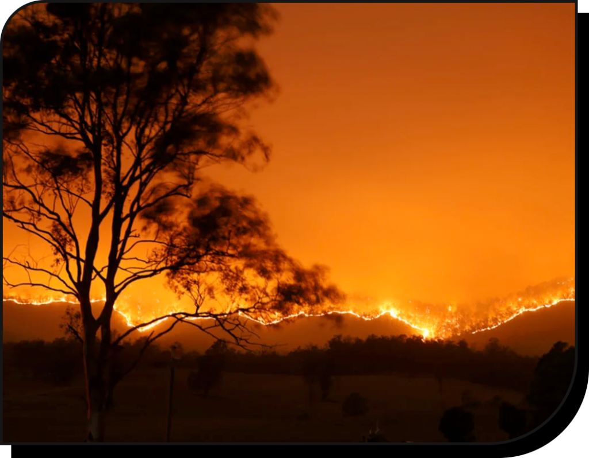
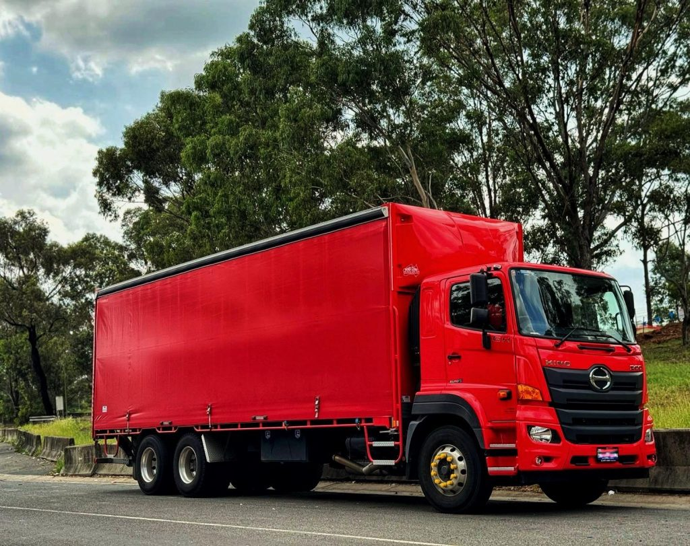
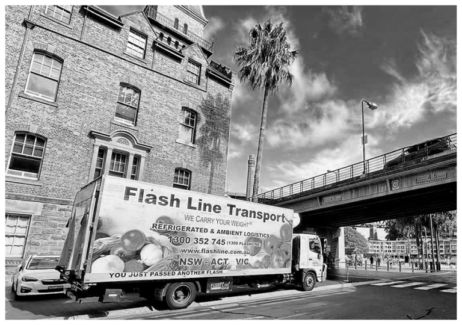
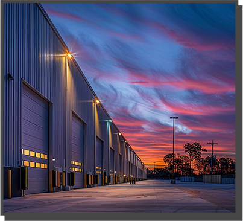
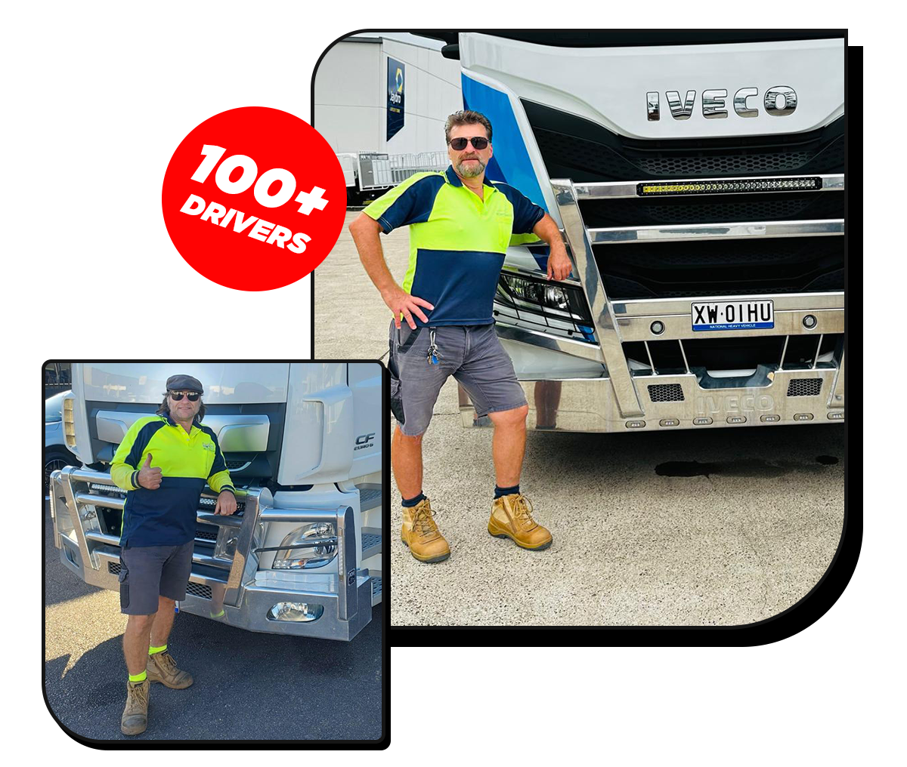
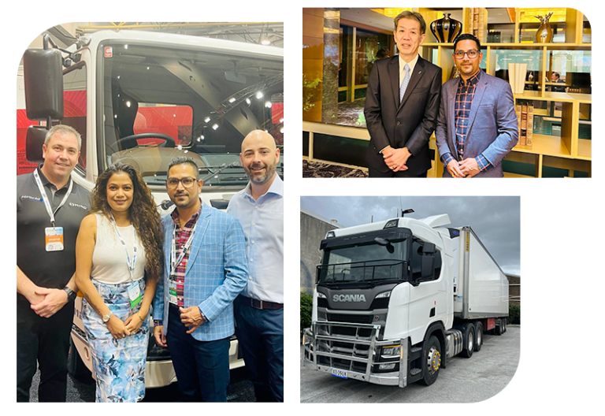
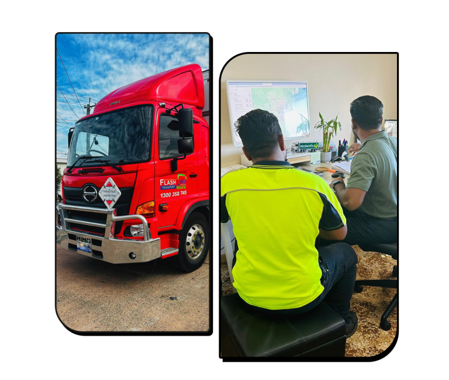

Cold chain transport
Temperature-controlled movement for fresh produce, supermarket, fast-food and aged-care supply chains.
Since 2010 · Australian owned · 24/7 operation
Nationwide refrigerated transport and cold-chain logistics — engineered for reliability, visibility and precision.
Australia’s finest trust us to deliver


Welcome to Flash Line
Flash Line Transport is a logistics and transport company that has been operating since 2010, running 24/7 from our Sydney headquarters. Our team brings a wealth of experience to every aspect of the supply chain — from procurement and warehousing to transport and final distribution — and we use advanced technology to optimise each step of the process, ensuring our clients’ goods are delivered on time and within budget.
We understand that logistics is more than moving freight — it is reliability, precision and partnership. From local enterprises to large national brands, clients stay informed at every stage of the delivery process, with full confidence that their goods arrive on time, intact and within budget.
Procurement, warehousing, transport and distribution aligned under one operating rhythm.
Cutting-edge, real-time tracking systems streamline operations, reduce costs and enhance transparency.
Cold-chain handling for major supermarket chains, fast food restaurants, aged-care facilities and industrial partners.


What we do
Temperature-controlled goods moved across every state and territory in Australia — from metro hubs to remote regions.
Temperature-controlled movement for fresh produce, supermarket, fast-food and aged-care supply chains.
Direct Sydney–Melbourne services and expanding national corridors with reliable scheduling.
Sydney metro, Queensland and regional runs built around delivery windows and product integrity.
Procurement-to-distribution coordination that reduces handling, cost and delivery friction.
Tailored transport programs for industrial leaders, food networks and essential service providers — including urgent airfreight support for partners such as QANTAS and D’nata.
Always-on coordination, dispatch and support for freight that cannot wait.
Why choose us
Specialist logistics for major supermarket chains — Coles, Costco, Woolworths, ALDI and Kmart — fast food restaurants and aged-care facilities, and proud logistics partner of industry leaders including Linfox, Dulux, BevChain, Karras, B&E Foods, Quality Centre and HDS (Home Delivery Services).
Delivery around Sydney, Melbourne, Canberra and Brisbane, connected through a growing national network.
Reliable, punctual shipping across Australia — every time.
Technology integration through live tracking, fleet management and temperature tracking.
Fully accredited, meeting Australia’s highest transport standards.
Continuous monitoring and training of the workforce.
Trusted by leading retailers and suppliers nationwide.
Area we cover
Headquartered in Sydney with operations extending across Victoria and established branches in Queensland, Melbourne and Kelso, our network reaches key regional hubs such as Tarcutta Exchange, Wollongong, Nowra, Newcastle, the Central Coast, Forbes, Blayney and Bathurst — ensuring seamless coverage across Australia’s major transport routes.
Plan a route with usWe proudly provide nationwide transportation solutions for all types of temperature-controlled goods. Regardless of distance, we ensure reliable, on-time deliveries from metro hubs to remote regions.
Case study
Proof points from the road — the moments that define how Flash Line operates when it matters most.

During the 2019 South Coast bushfires, when roads were blocked and lives at stake, Flash Line rerouted drivers through Canberra and Bega in a 24-hour mission to deliver food to aged-care homes in Nowra. Indy and Anushka monitored the trucks all night — proving once again that commitment isn’t just a word, it’s action.

A dedicated interstate route on one of Australia’s busiest freight corridors — improving delivery times, reliability and coordination between key distribution hubs, with real-time visibility from pickup to final delivery.
A new 14-pallet rigid fleet run expanding Queensland distribution — increased flexibility for smaller loads and time-sensitive freight, advanced tracking, and improved fuel efficiency reducing environmental impact.

Our journey · Our story
Flash Line isn’t just about transport — it’s about integrity, reliability and doing things the right way. Our growth is driven by a deep respect for our people and partners, and by a founder who learned logistics from the ground floor of Australia’s fresh produce industry.
“We carry your weight. It’s not just a slogan — it’s a promise.”
When Indy Dasanayaka arrived in Australia in 1998 to study Business, he brought more than books and dreams — he brought an unshakable drive to create something meaningful: a business that would support his future family, contribute to the Australian economy and serve the community with honesty and integrity.
His first job at the iconic Flemington Markets opened the door to the world of logistics. Starting with Fresh Produce Group and later joining Perfection Fresh Australia, Indy quickly realised that logistics wasn’t just about trucks and timetables — it was about people, trust and delivering life’s essentials to families every day. What started as a routine job became a calling.
Driven by an entrepreneurial spirit passed down from his family’s roots in mining and commerce in Sri Lanka, Indy envisioned creating jobs, empowering communities and building a legacy his children could be proud of. Encouraged by his mentor John Simonetta at Perfection Fresh, he took a bold leap in 2010 — purchasing a single truck and launching the earliest version of Flash Line Transport, delivering fresh produce to 17 supermarkets in Canberra. From early on, his mission extended beyond business: giving back, supporting new migrants and offering employment pathways to people looking for a fresh start — just as he once was.
Between 2010 and 2014, the business moved from vision to reality. These were the foundation years — every challenge became a lesson and every small success laid the groundwork for future growth.
What began as a modest operation gained momentum through persistence, trust and a focus on reliability. The company built its reputation step by step — strengthening relationships with partners, expanding capabilities and establishing the values that still guide it today: steady progress, and a solid base on which long-term growth could thrive.
The true turning point came in 2014, when Anushka Dasanayaka formally joined the venture — not only as CFO, but as Co-Founder. With a strong academic foundation in Accounting and Finance (RMIT) and HR Management (Monash), together with professional experience at a major bank, she brought the perfect blend of financial discipline, strategic foresight and people-focused leadership.
One of her earliest milestones was securing HACCP food safety compliance certification, establishing Flash Line’s reputation for safety and excellence. It became the backbone of operations — enabling the business to confidently handle perishable goods and win the trust of supermarkets, food distributors, aged-care providers and healthcare facilities.
Her greatest impact lay in building financial resilience: robust systems for cash flow, compliance and forecasting transformed a fledgling business into a scalable, future-ready enterprise. With her oversight, Flash Line could invest wisely, expand sustainably and navigate industry challenges with confidence.
“The business had a heartbeat, but with Anushka, we together gave it a structure, a face and a future.” — Indy Dasanayaka

Over the next decade, Flash Line Transport invested over $20 million into operations — expanding the fleet to more than 70 trucks and relocating from its original Parramatta base to larger headquarters in Camellia, NSW.
Today, Flash Line operates nationwide with major branches in Melbourne, Brisbane and the NSW Central West (Kelso), serving clients ranging from major supermarket chains, Quick Service Restaurants (QSRs) and aged-care providers to Kmart, Dulux, and flower and dangerous goods logistics.
The fleet ranges from two-pallet vehicles to 14-pallet Hino rigids and B-double prime movers for long-haul deliveries across the East Coast — and the company supports urgent airfreight logistics for partners like QANTAS and D’nata, ensuring perishables move efficiently between airports and distribution centres.
Flash Line’s next chapter is defined by a bold $30 million investment into a state-of-the-art 3.5-acre logistics hub in Marsden Park, complete with cold storage and warehousing facilities. The development will enhance operational capacity and support growing client demand across Australia.
Every night, Flash Line trucks are refuelled on-site from a 35,000-litre facility and meticulously cleaned to exceed industry hygiene standards — part of a company culture where drivers are valued, equipment is respected and operations run with clockwork precision.
Built on people, purpose and principles: Indy personally tested every vehicle brand before selecting Hino — valued for their Toyota-backed reliability — and built enduring partnerships with TRS and City Hino.

At Flash Line Transport, we believe success isn’t just measured in kilometres or consignments — it’s measured in the trust we build, the communities we support and the values we uphold. With strong leadership, strategic investment and an unshakable commitment to excellence, Flash Line Transport has become a leader in Australia’s logistics landscape.
About Flash Line
At Flash Line Transport, success is built on trust, community and a relentless drive for excellence.
Flash Line Transport is a trusted name in Australian logistics, proudly serving businesses nationwide since 2010. Driven by our core values of integrity, safety and service excellence, we continue to evolve with the demands of modern logistics — and our commitment to continuous improvement and customer satisfaction has positioned us as a trusted logistics partner for businesses of all sizes. At Flash Line Transport, we don’t just move goods — we move Australia forward.
Fleet gallery
From two-pallet vehicles to 14-pallet Hino rigids and B-double prime movers — modern refrigerated vehicles, tracked operations and disciplined maintenance for freight that arrives right.


Our team
Behind every successful delivery, every satisfied client and every kilometre travelled, there is a dedicated team that makes it all possible. At Flash Line Transport, our people are our greatest asset — they are the engine that drives our journey forward.
We work like family. Our staff don’t just clock in and out; they treat Flash Line like family and the business like their own, bringing heart, pride and personal ownership to everything they do. Many of our drivers and team members have been with us for years — they’ve grown with us, stood by us through challenges and helped shape the values we live by today. That culture of shared responsibility is what sets us apart, and our clients feel the difference every time a delivery arrives on time, with care.
“They don’t just carry freight — they carry our reputation, our values and the trust of every customer we serve.”


Our everyday heroes
Our drivers are the face of Flash Line — out on the roads before sunrise, ensuring deliveries reach supermarkets, restaurants, hospitals and homes across the nation. Their professionalism, commitment and personal care are unmatched. Many have grown with the company and take ownership in every run, proudly representing Flash Line wherever they go.
Guardians of our standards
Our Quality Officers meticulously check cleanliness, compliance, punctuality and presentation — ensuring every truck, every load and every delivery meets the highest standards of the industry. Whether it’s HACCP food safety protocols or service presentation, this team ensures excellence is non-negotiable.
The heartbeat of stability
No operation can thrive without strong financial stewardship. Our Finance Team manages budgets, tracks costs, ensures compliance and supports growth through careful analysis and reporting — providing the financial discipline that allows bold investment while maintaining operational stability.

Precision behind the scenes
Our Management and Operations Team works around the clock — from route planning and fleet maintenance to coordinating urgent consignments and last-minute changes. Our supervisors and key account managers are in constant communication with clients, handling queries and resolving issues with empathy, urgency and professionalism. They are the bridge between our clients and our logistics team.

Always-on oversight
Supporting our Australian operations, our dedicated overseas team works 24/7 to monitor deliveries, track runs and generate real-time reports — providing insights that improve efficiency, proactively manage issues and ensure a transparent experience for our clients at all times.
Together, these teams make up the soul of Flash Line Transport. Each department plays a critical role, but it’s their collaboration, trust and shared purpose that set us apart. Together we move more than just goods — we move communities, support families and build a legacy. At Flash Line, we don’t just deliver goods — we deliver excellence, powered by a team that believes in our mission as deeply as we do.
Our clients
National brands, food networks and essential services that trust Flash Line with time-critical, temperature-controlled freight.
Fresh produce logistics and national supply support.
Transport services across Linfox and its sub-brand operations.
Reliable operator support across HDS Logistic and its sub-brands.
Transport services for all Quality Centre customers.
All Flower Flow outlets — Sydney metro and Queensland.
All Karras Cold Logistics customers — Sydney metro, Central West and Tarcutta.
All B&E Foods customers — Sydney metro and Queensland.
All Morco Fresh customers — Sydney metro and Queensland.
All Lawrence customers — Sydney metro, Canberra and Newcastle.
News
Media features, fleet deployments, industry recognition and community partnerships from across Flash Line.

The June issue of Prime Mover Magazine spotlights Flash Line Transport’s expanding network and industry leadership across Australia. We are featured in the 2025 June issue — read the full article on pages 34–37.
Flash Line Transport is proud to announce the launch of its Direct Line Services between Sydney and Melbourne — a major step forward in delivering faster, more efficient interstate freight solutions.
This new dedicated route allows us to provide improved delivery times, greater reliability and seamless coordination between our key distribution hubs.
By streamlining operations on one of Australia’s busiest freight corridors, we can now offer our clients enhanced scheduling flexibility and real-time visibility from pickup to final delivery.
The Sydney–Melbourne Direct Line represents our continued commitment to innovation, customer satisfaction and operational excellence across every kilometre we drive.
Flash Line Transport is proud to announce the launch of a new 14-pallet rigid fleet run in Brisbane, further expanding our local distribution capabilities and service reach within Queensland.
This new deployment strengthens our commitment to faster, more efficient urban and regional deliveries, offering increased flexibility for customers requiring smaller loads and time-sensitive freight solutions.
Equipped with advanced tracking systems and maintained to the highest safety standards, our new rigid fleet enhances overall operational performance while reducing environmental impact through improved fuel efficiency.
This milestone marks another step in our mission to deliver dependable, technology-driven logistics solutions across Australia.

Flash Line Transport is honoured to be recognised by HDS (Heavy Duty Services) as “Operator of the Month” for July 2025.
This award highlights our continued dedication to operational excellence, fleet safety and service reliability within Australia’s logistics and transport industry.
The recognition reflects the hard work of our entire team — from drivers and fleet managers to operations and support staff — who consistently uphold the high standards Flash Line Transport is known for.
We thank HDS for this acknowledgment and remain committed to driving innovation, professionalism and customer satisfaction across every delivery we make.
Flash Line Transport is proud to announce our new role as the Official Transport Partner of the Emu Plains Junior Rugby League Club.
This partnership represents our ongoing commitment to supporting local communities and nurturing the next generation of athletes.
As part of this collaboration, Flash Line Transport will provide reliable transport assistance and logistical support for the club’s events, helping players, families and supporters stay connected throughout the season.
We believe in giving back to the communities that support us, and partnering with a respected local club like Emu Plains JRL is an exciting opportunity to contribute to grassroots sport development in the region.
Contact
Feel free to ask us about any of your needs. Tell us what you need moved, where it needs to go and how often — we’ll come back with a practical transport plan.
Logo preview